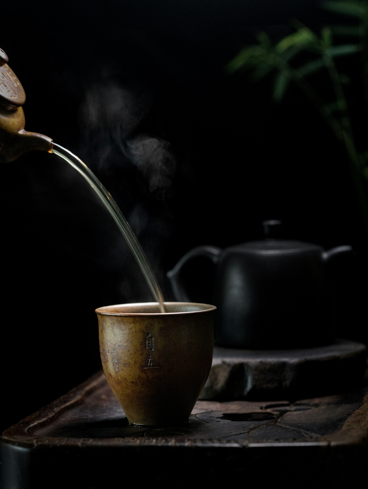

Just Tea Leaves
Small-batch, whole-leaf tea sourced straight from the farms that grow it. No dust, no fillers, no mystery blends — just tea leaves, the way they were meant to be.
Shop the Collection
Whole Leaf
Every blend is loose, whole-leaf tea — never bagged dust or fannings.
Direct Sourced
We buy straight from small family farms, not bulk auction lots.
Honest Labels
Harvest dates and steep times are printed clearly on every bag.